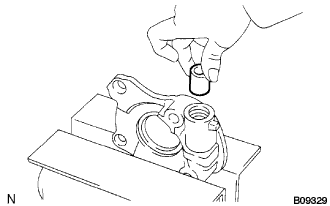
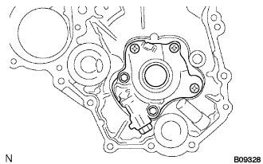
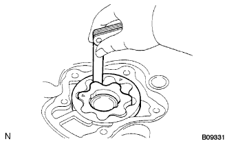
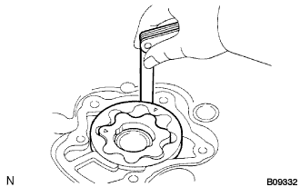
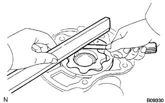
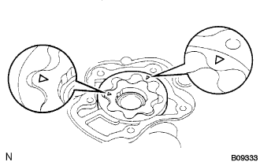

オイルポンプASSY オーバーホール（脱着·分解） |
| 1. オイルポンプ リリーフバルブ取りはずし |
プラグをはずし、スプリングおよびリリーフバルブを取りはずす。
| 2. オイルポンプ リリーフバルブ点検 |
|  |
リリーフバルブにエンジンオイルを塗布し、オイルポンプボデーのバルブ取り付け穴に挿入したとき、自重で滑らかに落下することを確認する。
| 3. オイルポンプASSY点検 |
オイルポンプカバー取りはずし
|  |
ボルト２本およびスクリュ３本をはずし、オイルポンプカバーを取りはずす。
オイルポンプギヤセット取りはずし
オイルポンプギヤセット点検
ドリブンローターおよびドライブローターにエンジンオイルを塗布し、オイルポンプボデーに組み付け後、滑らかに回転することを確認する。
チップクリアランス点検
|  |
シックネスゲージを使用して、ドリブンローターとドライブローターのすき間を測定する。
ボデークリアランス点検
|  |
シックネスゲージを使用して、ドリブンローターとオイルポンプボデーのすき間をを測定する。
サイドクリアランス点検
|  |
直定規およびシックネスゲージを使用して、各ローターとオイルポンプカバーのすき間を測定する。
オイルポンプギヤセット取り付け
|  |
ドリブンローターおよびドライブローターにエンジンオイルを塗布してマークをカバー側に向けて組み付ける。
オイルポンプカバー取り付け
ボルト２本およびスクリュ３本でオイルポンプカバーを取り付ける。
| 4. オイルポンプ リリーフバルブ取り付け |
リリーフバルブにエンジンオイルを塗布し、スプリングと共にオイルポンプボデーに組み付ける。
オイルポンプリリーフバルブプラグを取り付ける。